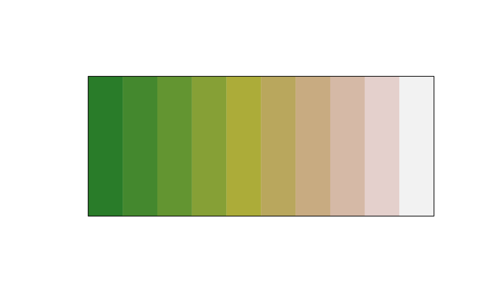
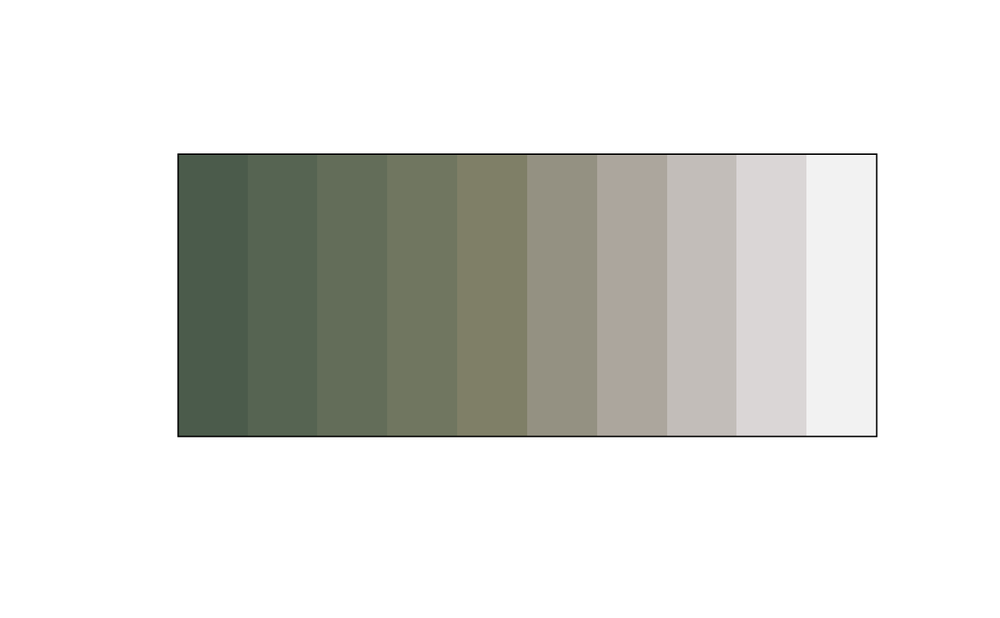

Make a color more desaturated
Arguments
- col
A
colorsobject (seecolor()) or a vector of any of the three kinds of R color specifications, i.e., either a color name (as listed bygrDevices::colors()), a hexadecimal string (seecol2rgb()), or a positive integerimeaninggrDevices::palette()[i].- shift
A numeric between 0 and 1. 0 will do zero desaturation, 1 will do complete desaturation. Defaults to 0.5.
Details
The colors will be transformed to HSL color space (hue, saturation,
lightness) where the saturation of the color will be modified. The
saturation of a color takes a value between 0 and 1, with 0 being black and
1 being white. shift takes a value between 0 and 1, where 0 means that the
saturation stays unchanged and 1 means completely desaturated. As an example,
if the saturation of the color is 0.6 and shift is 0.5, then the
saturation will be set to the halfway point between 0.6 and 0 which is 0.3.
Examples
plot(clr_desaturate(terrain.colors(10), shift = 0.5))

plot(clr_desaturate(terrain.colors(10), shift = 0.9))

plot(clr_desaturate(rep("firebrick", 11), shift = seq(0, 1, 0.1)))